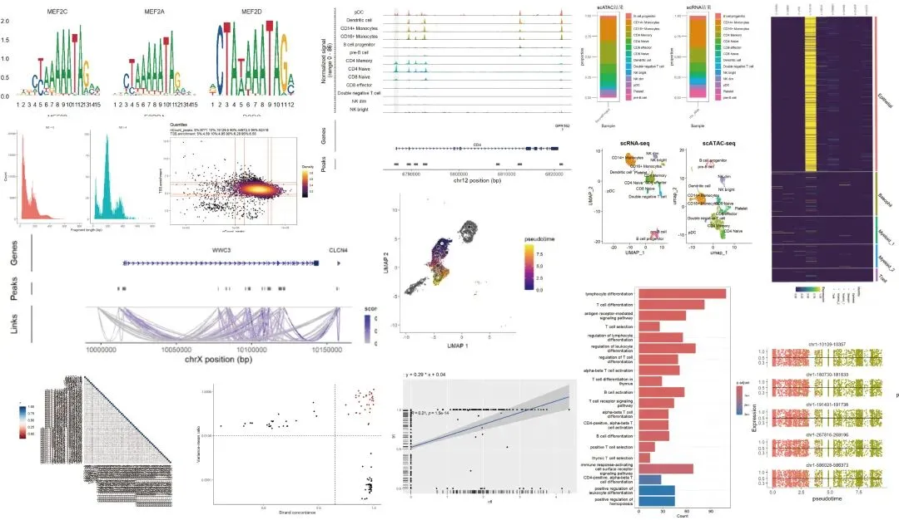
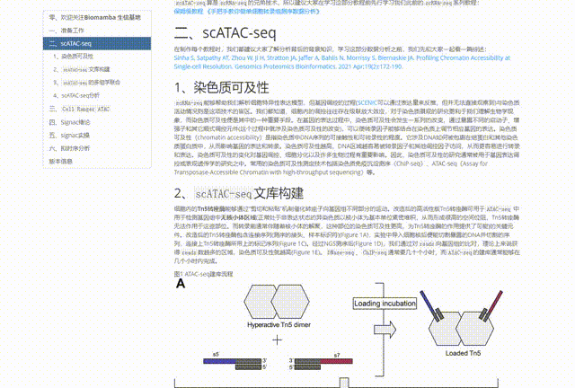
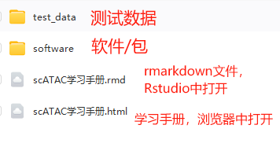

scATAC分析学习手册
原文：https://mp.weixin.qq.com/s?__biz=MzAwMzIzOTk5OQ==&mid=2247521636&idx=1&sn=208907010f3f7412c1c91343d7dfb0d3&chksm=9b3cec34ac4b6522977cb002919634af5334eec170b32f4961826dafb42f44f611144b159b2b#rd 合集：单细胞教程全收录

学习手册

 scRNA-seq能够帮助我们解析细胞特异性表达模型，但基因调控的过程(SCENIC可以通过表达量来反推，但无法直接观察到)与染色质活动情况则是这项技术的盲区。细胞内的调控往往存在级联放大效应，对于染色质景观的研究更利于生物学现象的理解，染色质可及性便是其中的一种重要手段。在基因的表达过程中，染色质可及性 会发生一系列的改变，通过暴露不同的启动子、增强子和其它顺式调控元件(这个过程中就涉及染色质可及性的改变)，可以使转录因子能够结合在染色质上调节相应基因的表达。因此，染色质可及性的研究通常被用于基因表达调控 或表观遗传学 的研究之中。常用的染色质可及性测定技术包括染色质免疫沉淀测序(ChIP-seq)、ATAC-seq(Assay for Transposase-Accessible Chromatin with high-throughput sequencing)等。这里，我们以signac 为例，结合Seurat与monocle制作了scATAC-seq分析学习手册。内容包含准备工作、scATAC-seq绪论、Cell Ranger ATAC、Signac绪论、Signac实操、拟时序分析这六个章节 ，希望能够给大家提供一个scATAC及scRNA联合分析的一站式教程。
scRNA-seq能够帮助我们解析细胞特异性表达模型，但基因调控的过程(SCENIC可以通过表达量来反推，但无法直接观察到)与染色质活动情况则是这项技术的盲区。细胞内的调控往往存在级联放大效应，对于染色质景观的研究更利于生物学现象的理解，染色质可及性便是其中的一种重要手段。在基因的表达过程中，染色质可及性 会发生一系列的改变，通过暴露不同的启动子、增强子和其它顺式调控元件(这个过程中就涉及染色质可及性的改变)，可以使转录因子能够结合在染色质上调节相应基因的表达。因此，染色质可及性的研究通常被用于基因表达调控 或表观遗传学 的研究之中。常用的染色质可及性测定技术包括染色质免疫沉淀测序(ChIP-seq)、ATAC-seq(Assay for Transposase-Accessible Chromatin with high-throughput sequencing)等。这里，我们以signac 为例，结合Seurat与monocle制作了scATAC-seq分析学习手册。内容包含准备工作、scATAC-seq绪论、Cell Ranger ATAC、Signac绪论、Signac实操、拟时序分析这六个章节 ，希望能够给大家提供一个scATAC及scRNA联合分析的一站式教程。
本教程可视化集锦：

-Biomamba

所见即所得
学习手册以html文件格式提供，可在浏览器中打开并翻阅学习

教程目录 ：
一、准备工作
1、编程基础
2、硬件基础
3、生信基础
二、scATAC-seq
1、染色质可及性
2、scATAC-seq文库构建
3、scATAC-seq的多组学i安和
4、scATAC-seq分析
三、Cell Ranger ATAC
1、软件下载与安装
2、测试数据
3、cellranger-atac定量
四、Signac绪论
1、PBMC演示数据
2、评估scATAC中的降维方法
3、DNA可及性和染色体基因型的联合分析
4、scATAC分析扩展
5、讨论
五、signac实操
1、signac基本流程
2、与scRNA的联合分析
3、常见可视化
4、多样本分析
5、基因型联合scATAC分析
6、motif分析
7、共及性网络构建
六、拟时序分析
1、创建cell_data_set
2、拟时序分析
文末下载链接中包含的内容：

测试文件约50GB ，大家注意按需下载！
解锁前需阅读：龙年订阅须知

文末还可解锁以下内容


龙年订阅合集持续更新中，联系客服微信[Biomamba_kefu]可以119￥获取全部资料(包括今年后面更新的内容)。当然，付费不是目的，以下资料都可以通过转发领取(更推荐这种方式)。
龙年订阅须知 单细胞Figure 1常见图表 快速上手Seurat V5 机器学习基础手册 scRNA-Seq学习手册Seurat V4修订版 Bulk RNASeq| 转录组实战scRNA-Seq双细胞过滤手册 CellChat空转细胞通讯合辑 scRNA-Seq学习手册Seurat V5更新版 SCENIC转录因子调控网络图

订阅后获取学习手册下载链接：